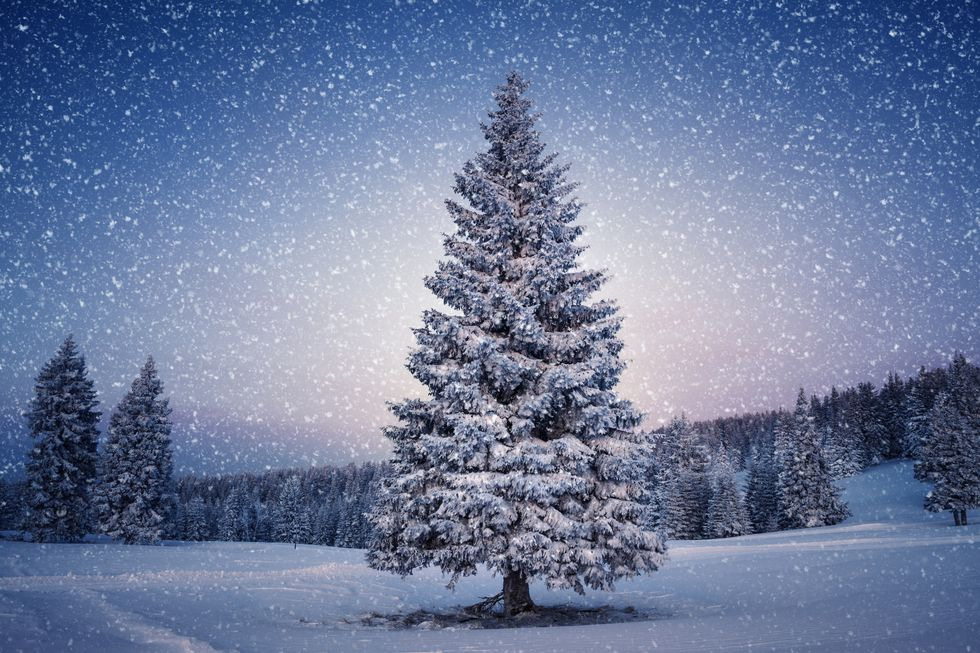

Wanneer was ook alweer de laatste witte kerst in Nederland?
Een witte kerst, het lijkt alweer eeuwen geleden. Of valt het toch mee? En hoe meten ze dat eigenlijk?
De laatste witte kerst in Nederland is alweer eventjes geleden. Wanneer maakten we het ook alweer mee? Hoe vaak komt een witte kerst voor en hoe wordt dat eigenlijk gemeten?
De laatste witte kerst in Nederland
De laatste keer dat we van een officiële witte kerst in Nederland konden spreken was in 2010. 'Officieel' wil zeggen dat er zowel op Eerste als op Tweede Kerstdag een aaneengesloten sneeuwdek ligt in De Bilt, waar het KNMI is gevestigd. Als er daar geen sneeuw ligt maar in Zeeland of Limburg wel, dan hebben ze dáár misschien een witte wereld, maar gaat het bij meteorologen niet de boeken in als een 'nationale' witte kerst.
Rond Kerstmis is het vaak juist zacht weer
Dat sneeuwdek in De Bilt met Kerstmis is sinds 1901 (het begin van de weermetingen in Nederland) slechts acht keer voorgekomen. Vóór 2010 gebeurde het in 2009, en daarvoor in 1981. Hier zie je een mooi overzicht van het KNMI. Het gebeurt vaak dat het rond kerst juist heel zacht weer is voor de tijd van het jaar. Sinds 1901 is het vijftien keer warmer geweest dan tien graden Celsius. In 2015 was het op Eerste Kerstdag zelfs veertien graden in De Bilt, een record.
Minder kans op witte kerst door klimaatverandering
Met kerst vriest het misschien minder vaak dan je denkt. Sinds 1901 is het maar zeven keer voorgekomen dat het op beide dagen vroor. Het klopt dus niet dat het op die dagen altijd steenkoud hóórt te zijn. In de toekomst, verwacht het KNMI, gaan we minder dagen meemaken waarop we kans maken op sneeuwval met Kerstmis. Als de gemiddelde temperatuur onder nul is en het koud genoeg is voor sneeuw in plaats van regen is er sprake van zo'n potentiële sneeuwdag. Tussen 1981 en 2010 hadden we gemiddeld 21 van die dagen per jaar. Dat aantal gaat in de komende decennia hard achteruit, verwachten klimaatexperts, in een tempo dat afhankelijk is van hoe snel het gaat met de opwarming van de aarde.